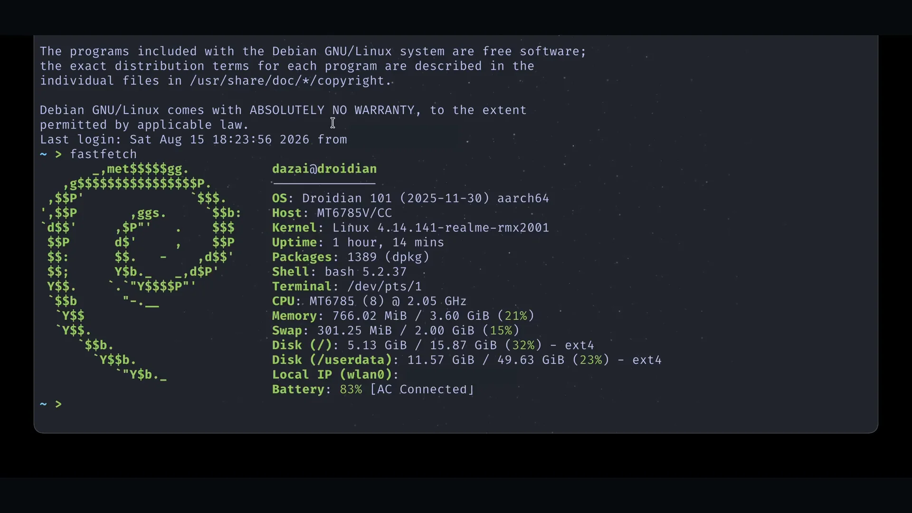
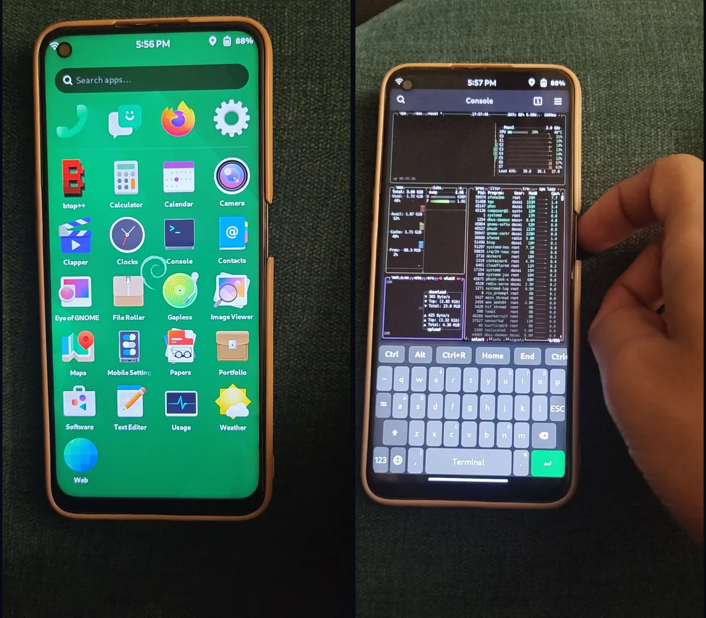
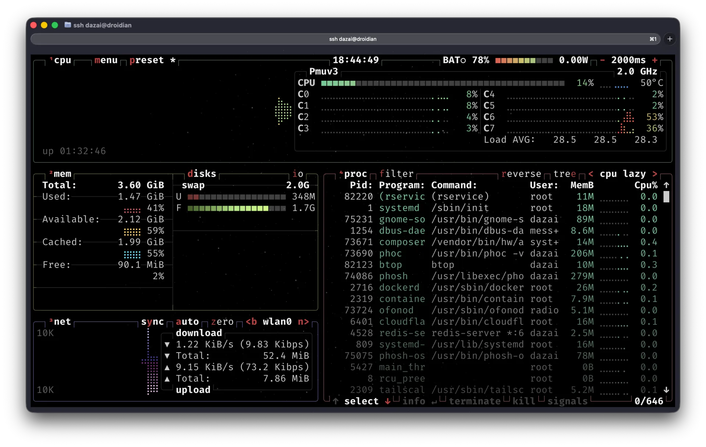
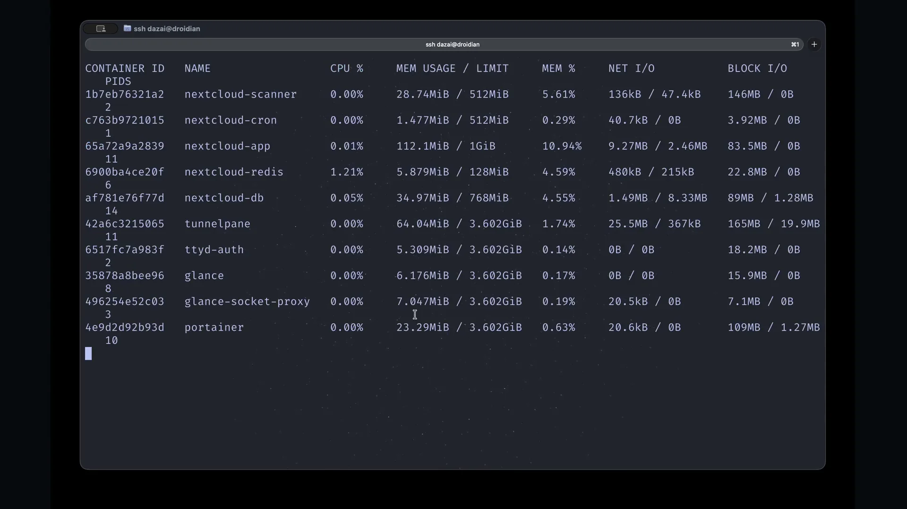

Linux on a Smartphone: Realme 6
Patched, cross-compiled, and flashed a custom Linux kernel to run Droidian on the Realme 6 (RMX2001), then packaged subsequent updates as versioned Debian packages — repurposing the phone as a low-cost Linux server.
- Role
- Kernel & Systems Developer
- Ownership
- Independent build
- Scope
- Kernel + Linux deployment
- Delivery
- Open-source repository




The Challenge
The Realme 6 is unsupported hardware for running a conventional mobile Linux environment. This project investigates what it takes to adapt the device kernel, debug the boot path, and repurpose existing phone hardware as a low-cost Linux server platform.
My Role
I patched the Linux 4.14.141 device kernel for Droidian compatibility, cross-compiled it with the pinned Droidian toolchain, and flashed it to the device. Debugging relied on ADB and device logs rather than a standard desktop installation path. Once the device was stable, I moved from one-off flashing to a repeatable release pipeline: kernel updates are now built and shipped as versioned Debian packages instead of a manual flash each time.
What I Delivered
- Kernel patching & cross-compilation: Patched the RMX2001 device kernel (Linux 4.14.141, forked from the device's open-source kernel tree) for Droidian hardware compatibility and cross-compiled it with the pinned Droidian toolchain.
- Reproducible, guarded builds: A Dockerized build script (
helpers/build-magiskboot-deb.sh) compiles the kernel, repacks it into a validated stock boot image with MagiskBoot, and byte-compares the ramdisk, DTB, and kernel DTB against the original before packaging — so a build can only touch the kernel, nothing else in the boot image. - Debian packaging: Each successful build produces a versioned
linux-bootimage-*.deb(installed withapt install) alongside a manifest of SHA-256 checksums for the package, boot image, and raw kernel — replacing the earlier flash-and-hope cycle with an auditable release. - Pre-install auditing: Every package is inspected with
dpkg-deb --info/--contents/--controland its maintainer scripts sanity-checked before install, since the package writes directly to a boot partition. - Device validation gate: A documented checklist (
uname,systemctl --failed,journalctl,dmesg, plus display/touch/power/Wi-Fi/SSH checks across repeated cold boots) has to pass before a build is considered publishable. - Linux environment: A device-side environment for running services on reused hardware.
- Remote access: Containerized services on per-service subdomains, with Glances for a unified system view and Tailscale for secure connectivity.
Key Decisions
Reuse hardware before buying more. The project treats an existing phone as a systems-learning platform, accepting device-specific constraints in exchange for a low-cost environment that exposes real kernel and deployment problems.
Never trust a build until the device does. A structurally valid boot image isn't treated as deployable on its own — verified boot/recovery backups are kept separately, one kernel change is tested at a time, and a build only gets published after it survives repeated real-device reboots.
Debug from evidence. Boot logs, recovery behavior, partition state, and repeatable build output drive each iteration instead of relying on opaque trial and error.
Outcome
The repository documents an open, device-specific path toward running Droidian and Linux services on the Realme 6, backed by a reproducible build-package-install workflow rather than a one-off port. It demonstrates hands-on work below the application layer: kernel patching and cross-compilation, boot-image packaging, release auditing, and remote administration.
Tech Stack
- Kernel: C, Linux 4.14.141, Makefile, pinned Droidian cross-compilation toolchain
- Packaging: Debian packaging (dpkg, apt), MagiskBoot, SHA-256 checksummed release manifests
- Build tooling: Docker-based reproducible builds, shell
- Mobile Linux: Droidian, ADB, recovery tooling
- Services: Docker, Glances, Tailscale